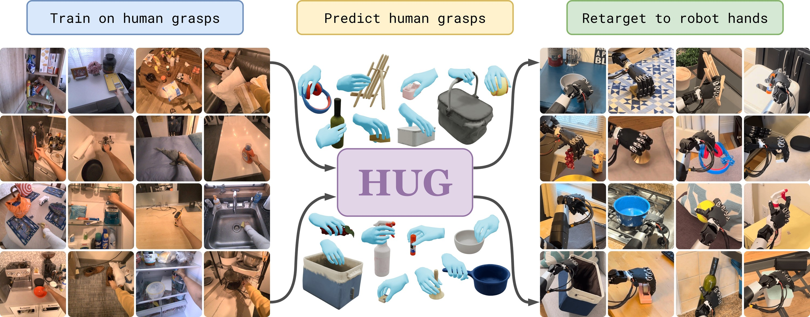
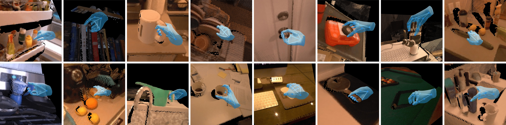

Abstract
Humans can grasp objects effortlessly, whereas multi-fingered robots are far from this level of generality. We argue that the most natural source of robot grasping data is from humans, who pick up thousands of objects every day. We present HUG, a flow-matching model that generates diverse human grasps for any user-specified object in a single RGB-D image captured from a stereo camera. Using smart glasses, we first collect 1M-HUGs, an egocentric dataset of human grasps spanning 1M frames (27.8 hrs) and 6,707 object instances across 41 buildings. Next, to model the distribution of natural human grasps, our novel flow-matching model fuses RGB and depth observations to output a grasp parameterized by wrist translation, wrist rotation, and MANO hand pose. Predicted grasps can be retargeted to various robot hands, enabling zero-shot grasping in everyday scenes. To standardize evaluation, we build a new simulated benchmark, HUG-Bench, of 90 unseen objects from five geometric categories and various sizes, with metric-scale 3D meshes. We evaluate HUG in the real world on the 30-object test set of HUG-Bench across multiple stereo cameras, robot embodiments, and household environments. HUG outperforms the state-of-the-art grasping baselines by +23% and +34% on our challenging object set. Code, data, benchmark, checkpoints, and an interactive demo are released on our website.

HUG learns dexterous grasping without any robot data. Trained solely on egocentric human grasp data, HUG generates diverse human grasps for real-world objects in a single RGBD image captured from a stereo camera, which can be retargeted to robot hands for zero-shot, in-the-wild dexterous grasping.
HUG in-the-wild (autonomous, 4x). 30 objects with 10 uncut trials each, reaching 62.0% success in an unseen home with unseen objects. Success is counted as passing the object to the human.
Contributions
To our knowledge, HUG is the first grasping framework trained purely on human data and deployable across multiple robot embodiments. We open-source the following contributions:
1M-HUGs, 1M egocentric image-grasp pairs of natural human grasps across 6,707 recordings and 41 buildings, with MANO-fit hand poses and metric depth.
HUG, a point-conditioned flow-matching model that predicts MANO grasps from RGB-D and retargets to multiple embodiments without per-hand training.
HUG-Bench, 90 unseen objects with metric-scale 3D meshes for paired simulation and real-world evaluation.
The 1M-HUGs Dataset

1M-HUGs dataset. Our training data comprises 1M egocentric frames of human grasps, spanning 6,707 object instances. Each entry provides synchronized RGB and grayscale views, metric depth, an object mask, and a MANO hand pose with wrist transformation in the camera frame.
HUG-Bench
Buy the 30 test objects
| Cylindrical | Spheroidal | Prismatic | Appendaged | Amorphous | |
|---|---|---|---|---|---|
| Small | Glue StickPepper Shaker | StrawberryHacky Sack | EraserMatch Box | Nail ClipperLock | Rubber DuckTape Measure |
| Medium | UmbrellaBowl | PearSoftball | Card DeckSponge | DustpanHandbell | Tape DispenserGrapes |
| Large | Spray BottleWine Bottle | PineappleFootball | Wipe DispenserStorage Bin | SaucepanPicnic Basket | HeadphonesEasel |


HUG-Bench. 90 unseen everyday objects spanning five geometric categories and three size bins, each reconstructed into a metric-scale 3D mesh for paired evaluation in simulation and the real world. Left: the 30-object test split with real objects (top) and their simulation assets (bottom). Right: real-to-sim grasping, evaluating HUG on HUG-Bench in simulation using real captured inputs.
Baseline Comparisons
Pick a HUG-Bench test object to compare methods side by side. Each clip plays 10 rollouts consecutively (autonomous, 4x). Success is counted as lifting the object off the table. Overall success rate: HUG 66.7% · Dex1B 43.7% · CAP 32.7%
Note on Dex1B. Dex1B runs open-loop and can plan trajectories that collide with the table. Severe table collisions are aborted to protect the hardware and counted as failures, with the colliding trajectory shown in the right panel. Collisions that eject the hand from the safety mount are also counted as failures.
Real-World Failure Modes

Failure modes. Grasp-outcome flow for the 300 HUG-Bench test trials in each real-world setting, tracing every attempt through the pre-grasp, grasp, and lift stages into success or a specific failure mode. The dominant cause of failures is the absence of motion planning in our minimal open-loop setup, where the hand often strikes the object or table as it closes. With force-aware grasping, we also expect fewer post-grasp slips, since HUG predicts a static pose with no notion of contact force.
BibTeX
If you find our work useful, please consider citing our paper:
@article{wu2026hug,
title={Human Universal Grasping},
author={Kevin Yuanbo Wu and Tianxing Zhou and Isaac Tu and Billy Yan and Irmak Guzey and David Fouhey and Dandan Shan and Lerrel Pinto},
journal={arXiv preprint arXiv:2606.17054},
year={2026}
}